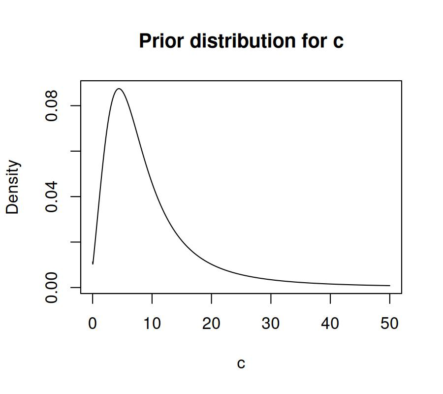

Extracting default priors, the generated Stan code and Stan data
Ven Popov
Gidon Frischkorn
Source:vignettes/articles/bmm_extract_info.Rmd
bmm_extract_info.Rmd
1 Default priors for models in the bmm package
Each model in bmm comes with default priors on all of its parameters. Unlike
in the brms package, the default priors in bmm are informative, based on
current expert knowledge in the domain of the model. These default priors help
with model identifiability and improve estimation. However, because the priors
are informed, it is even more important for you to understand what priors are
used when you estimate a model, or when you report the results of a model fit.
You can use the function default_prior() from the brms package to extract
the default priors for a model. The arguments to default_prior are the same as
for the bmm() function in bmm. For example, if you want to extract the
default priors for the SDM model (see the online article for more information), where you have
a set_size categorical predictor of c and kappa, you can use the following
code:
library(bmm)
default_prior(bmf(c ~ 0 + set_size, kappa ~ 0 + set_size),
data = oberauer_lin_2017,
model = sdm(resp_error = 'dev_rad'))
#> prior class coef group resp dpar nlpar lb ub source
#> student_t(5, 2, 0.75) b set_size1 c <NA> <NA> (vectorized)
#> student_t(5, 2, 0.75) b set_size2 c <NA> <NA> (vectorized)
#> student_t(5, 2, 0.75) b set_size3 c <NA> <NA> (vectorized)
#> student_t(5, 2, 0.75) b set_size4 c <NA> <NA> (vectorized)
#> student_t(5, 2, 0.75) b set_size5 c <NA> <NA> (vectorized)
#> student_t(5, 2, 0.75) b set_size6 c <NA> <NA> (vectorized)
#> student_t(5, 2, 0.75) b set_size7 c <NA> <NA> (vectorized)
#> student_t(5, 2, 0.75) b set_size8 c <NA> <NA> (vectorized)
#> student_t(5, 1.75, 0.75) b set_size1 kappa <NA> <NA> (vectorized)
#> student_t(5, 1.75, 0.75) b set_size2 kappa <NA> <NA> (vectorized)
#> student_t(5, 1.75, 0.75) b set_size3 kappa <NA> <NA> (vectorized)
#> student_t(5, 1.75, 0.75) b set_size4 kappa <NA> <NA> (vectorized)
#> student_t(5, 1.75, 0.75) b set_size5 kappa <NA> <NA> (vectorized)
#> student_t(5, 1.75, 0.75) b set_size6 kappa <NA> <NA> (vectorized)
#> student_t(5, 1.75, 0.75) b set_size7 kappa <NA> <NA> (vectorized)
#> student_t(5, 1.75, 0.75) b set_size8 kappa <NA> <NA> (vectorized)
#> student_t(5, 2, 0.75) b c <NA> <NA> user
#> student_t(5, 1.75, 0.75) b kappa <NA> <NA> user
#> constant(0) Intercept <NA> <NA> userIn this case we used a formula of the type ~ 0 + factor, which means that the
intercept is suppressed, and a separate parameter is estimated for each level of
the set_size factor variable. For the SDM model, both kappa and c have to be
positive, so they are defined in the model on the log scale, and exponentiated
afterwards. Thus, the parameters are sampled on the log scale, and the priors
are defined on the log scale as well. The default prior for c is a student-t
distribution with 5 degrees of freedom, a mean of 2, and a standard deviation of
0.75. This corresponds to the following prior distribution over the log scale,
with 80% of the prior mass between 0.9 and 3.10:
log_c <- seq(-2,6, 0.01)
y <- brms::dstudent_t(log_c, df = 5, mu = 2, sigma = 0.75)
plot(log_c, y, type = 'l', xlab = 'log(c)', ylab = 'Density',
main = 'Prior distribution for log(c)')This corresponds to the following log-T prior over the native scale of c, with
a median of ~7.4, and 80% of the prior mass between 2.44 and 22.35:
c <- seq(0, 50, 0.01)
y <- brms::dstudent_t(log(c), df = 5, mu = 2, sigma = 0.75) / c
plot(c, y, type = 'l', xlab = 'c', ylab = 'Density',
main = 'Prior distribution for c')
The default prior for kappa is similar, with a lower mean, a student-t
distribution with 5 degrees of freedom, a mean of 1.75, and a standard deviation
of 0.75, which corresponds to a median of 3.5 on the native scale.
If we had retained the intercept in the formula, the default prior above would be placed on the intercept, while the effects of each factor level relative to the intercept would have a default prior of normal(0, 1):
default_prior(bmf(c ~ 1 + set_size, kappa ~ 1 + set_size),
data = oberauer_lin_2017,
model = sdm(resp_error = 'dev_rad'))
#> prior class coef group resp dpar nlpar lb ub source
#> normal(0, 1) b set_size2 c <NA> <NA> (vectorized)
#> normal(0, 1) b set_size3 c <NA> <NA> (vectorized)
#> normal(0, 1) b set_size4 c <NA> <NA> (vectorized)
#> normal(0, 1) b set_size5 c <NA> <NA> (vectorized)
#> normal(0, 1) b set_size6 c <NA> <NA> (vectorized)
#> normal(0, 1) b set_size7 c <NA> <NA> (vectorized)
#> normal(0, 1) b set_size8 c <NA> <NA> (vectorized)
#> normal(0, 1) b set_size2 kappa <NA> <NA> (vectorized)
#> normal(0, 1) b set_size3 kappa <NA> <NA> (vectorized)
#> normal(0, 1) b set_size4 kappa <NA> <NA> (vectorized)
#> normal(0, 1) b set_size5 kappa <NA> <NA> (vectorized)
#> normal(0, 1) b set_size6 kappa <NA> <NA> (vectorized)
#> normal(0, 1) b set_size7 kappa <NA> <NA> (vectorized)
#> normal(0, 1) b set_size8 kappa <NA> <NA> (vectorized)
#> normal(0, 1) b c <NA> <NA> user
#> student_t(5, 2, 0.75) Intercept c <NA> <NA> user
#> normal(0, 1) b kappa <NA> <NA> user
#> student_t(5, 1.75, 0.75) Intercept kappa <NA> <NA> user
#> constant(0) Intercept <NA> <NA> userYou can also see that in both cases, the last line is “constant(0)” on the
Intercept of the mu parameter, which is fixed to 0 by default in the model,
and is not estimated. You might wonder why it doesn’t say mu in the dpar
column of that prior - this is because brms assumes mu is the default
parameter in all models, so it hides it in the output. If you wanted to estimate
mu, instead of leaving it fixed, the prior for it would change as well:
default_prior(bmf(mu ~ 1 + set_size, c ~ 1, kappa ~ 1),
data = oberauer_lin_2017,
model = sdm(resp_error = 'dev_rad'))
#> prior class coef group resp dpar nlpar lb ub source
#> (flat) b default
#> (flat) b set_size2 (vectorized)
#> (flat) b set_size3 (vectorized)
#> (flat) b set_size4 (vectorized)
#> (flat) b set_size5 (vectorized)
#> (flat) b set_size6 (vectorized)
#> (flat) b set_size7 (vectorized)
#> (flat) b set_size8 (vectorized)
#> student_t(1, 0, 1) Intercept <NA> <NA> user
#> student_t(5, 2, 0.75) Intercept c <NA> <NA> user
#> student_t(5, 1.75, 0.75) Intercept kappa <NA> <NA> userThe mu parameter uses a tan_half link function, which means that the
student_t(1, 0, 1) prior results in a uniform prior over the native scale of
mu from -pi to pi. You will also notice above that for the regression
coefficients on mu, the default prior is an improper flat prior - this is the
only parameter in bmm models which has a flat prior by default, and we
strongly recommend you set a prior on it, if you want to calculate Bayes Factors
or use other Bayesian inference methods.
All of the above examples make an important point - priors are always specified
on the scale at which the parameters are sampled. You can always check the
documentation for a given model to see the links for the parameters (e.g.
?sdm).
To overwrite the default priors and set your own, you can use the set_prior
function from brms. For more information, see ?brms::set_prior.
2 Extracting the Stan code
The Stan code used for fitting a model is generated together by bmm and
brms. bmm takes care of the code specific to the model, while brms
generates the code for the regression syntax, priors and everything else. If you
want to get the Stan code that would be used for fitting a model, so that you
can inspect it or modify it, you can use the stancode() function from brms:
stancode(bmf(c ~ 0 + set_size, kappa ~ 0 + set_size),
data = oberauer_lin_2017,
model = sdm(resp_error = 'dev_rad'))// generated with brms 2.22.0 and bmm 1.2.0
functions {
/* compute the tan_half link
* Args:
* x: a scalar in (-pi, pi)
* Returns:
* a scalar in (-Inf, Inf)
*/
real tan_half(real x) {
return tan(x / 2);
}
/* compute the tan_half link (vectorized)
* Args:
* x: a vector in (-pi, pi)
* Returns:
* a vector in (-Inf, Inf)
*/
vector tan_half(vector x) {
return tan(x / 2);
}
/* compute the inverse of the tan_half link
* Args:
* y: a scalar in (-Inf, Inf)
* Returns:
* a scalar in (-pi, pi)
*/
real inv_tan_half(real y) {
return 2 * atan(y);
}
/* compute the inverse of the tan_half link (vectorized)
* Args:
* y: a vector in (-Inf, Inf)
* Returns:
* a vector in (-pi, pi)
*/
vector inv_tan_half(vector y) {
return 2 * atan(y);
}
// utility function trick for converting real to integer type
int bin_search(real x, int min_val, int max_val) {
int mid_p;
int L = min_val;
int R = max_val;
while(L < R) {
mid_p = (R-L) %/% 2;
if (L + mid_p < x) {
L += mid_p + 1;
} else if (L + mid_p > x) {
R = L + mid_p - 1;
} else {
return(L + mid_p);
}
}
return(L);
}
// utility function for determining optimal number of chebyshev points for the denominator approximation
int get_m(real c, real kappa) {
real m = floor(2 * exp(0.4*c) * kappa^(fma(c,0.0145,0.7)) + 0.5)+2;
int M = bin_search(m, 2, 200);
return(M);
}
// log of the numerator of the sdm likelihood
real sdm_simple_lpdf(vector y, vector mu, vector c, vector kappa) {
int N = size(y);
vector[N] num = exp(fma(kappa,cos(y-mu)-1,c)) ;
real out = dot_product(num, sqrt(kappa));
out *= inv(sqrt2()) * inv_sqrt(pi());
return(out);
}
// log of the normalization constant, approximated by chebyshev quadrature
real sdm_simple_ldenom_chquad_adaptive(real c, real kappa, matrix CN) {
int m = get_m(c,kappa);
vector[m] cosn = CN[1:m,m];
vector[m] fn = exp(fma(kappa,cosn,c)) * sqrt(kappa) * inv(sqrt2()) * inv_sqrt(pi());
real out = -log_sum_exp(fn)+log(m);
return(out);
}
}
data {
int<lower=1> N; // total number of observations
vector[N] Y; // response variable
int<lower=1> K_c; // number of population-level effects
matrix[N, K_c] X_c; // population-level design matrix
int<lower=1> K_kappa; // number of population-level effects
matrix[N, K_kappa] X_kappa; // population-level design matrix
int prior_only; // should the likelihood be ignored?
}
transformed data {
// precompute chebyshev points
matrix[200,200] COSN;
for (m in 1:200) {
for (i in 1:m) {
COSN[i,m] = cos((2*i-1)*pi()/(2*m))-1;
}
}
}
parameters {
vector[K_c] b_c; // regression coefficients
vector[K_kappa] b_kappa; // regression coefficients
}
transformed parameters {
real Intercept; // temporary intercept for centered predictors
real lprior = 0; // prior contributions to the log posterior
Intercept = 0;
lprior += student_t_lpdf(b_c | 5, 2, 0.75);
lprior += student_t_lpdf(b_kappa | 5, 1.75, 0.75);
}
model {
// likelihood including constants
if (!prior_only) {
// initialize linear predictor term
vector[N] mu = rep_vector(0.0, N);
// initialize linear predictor term
vector[N] c = rep_vector(0.0, N);
// initialize linear predictor term
vector[N] kappa = rep_vector(0.0, N);
mu += Intercept;
c += X_c * b_c;
kappa += X_kappa * b_kappa;
mu = inv_tan_half(mu);
kappa = exp(kappa);
target += sdm_simple_lpdf(Y | mu, c, kappa);
// adaptive calculation of the normalization constant
real z;
for (n in 1:N) {
if (n == 1 || c[n] != c[n-1] || kappa[n] != kappa[n-1]) {
z = sdm_simple_ldenom_chquad_adaptive(c[n],kappa[n],COSN);
}
target += z;
}
target += -(log2()+log(pi()))*N;
}
// priors including constants
target += lprior;
}
generated quantities {
// actual population-level intercept
real b_Intercept = Intercept;
}Alternatively, if you already have a fitted model object, you can just call
stancode() on that object, which will give you the same result:
3 Extracting the Stan data
If you want to extract the data that would be used for fitting a model, you can
use the standata() function from brms. This function will return a list with
the data that would be passed to Stan for fitting the model.
sd <- standata(bmf(c ~ 0 + set_size, kappa ~ 0 + set_size),
data = oberauer_lin_2017,
model = sdm(resp_error = 'dev_rad'))
str(sd)
#> List of 10
#> $ N : int 15200
#> $ Y : num [1:15200(1d)] 0.384 -0.4538 -0.0873 0.3665 -0.0349 ...
#> $ K : int 1
#> $ Kc : num 0
#> $ X : num [1:15200, 1] 1 1 1 1 1 1 1 1 1 1 ...
#> ..- attr(*, "dimnames")=List of 2
#> .. ..$ : chr [1:15200] "1" "2" "3" "4" ...
#> .. ..$ : chr "Intercept"
#> ..- attr(*, "assign")= int 0
#> $ K_c : int 8
#> $ X_c : num [1:15200, 1:8] 0 0 0 0 1 1 0 0 0 0 ...
#> ..- attr(*, "dimnames")=List of 2
#> .. ..$ : chr [1:15200] "1" "2" "3" "4" ...
#> .. ..$ : chr [1:8] "set_size1" "set_size2" "set_size3" "set_size4" ...
#> ..- attr(*, "assign")= int [1:8] 1 1 1 1 1 1 1 1
#> ..- attr(*, "contrasts")=List of 1
#> .. ..$ set_size: num [1:8, 1:7] 0 1 0 0 0 0 0 0 0 0 ...
#> .. .. ..- attr(*, "dimnames")=List of 2
#> .. .. .. ..$ : chr [1:8] "1" "2" "3" "4" ...
#> .. .. .. ..$ : chr [1:7] "2" "3" "4" "5" ...
#> $ K_kappa : int 8
#> $ X_kappa : num [1:15200, 1:8] 0 0 0 0 1 1 0 0 0 0 ...
#> ..- attr(*, "dimnames")=List of 2
#> .. ..$ : chr [1:15200] "1" "2" "3" "4" ...
#> .. ..$ : chr [1:8] "set_size1" "set_size2" "set_size3" "set_size4" ...
#> ..- attr(*, "assign")= int [1:8] 1 1 1 1 1 1 1 1
#> ..- attr(*, "contrasts")=List of 1
#> .. ..$ set_size: num [1:8, 1:7] 0 1 0 0 0 0 0 0 0 0 ...
#> .. .. ..- attr(*, "dimnames")=List of 2
#> .. .. .. ..$ : chr [1:8] "1" "2" "3" "4" ...
#> .. .. .. ..$ : chr [1:7] "2" "3" "4" "5" ...
#> $ prior_only: int 0
#> - attr(*, "class")= chr [1:2] "standata" "list"